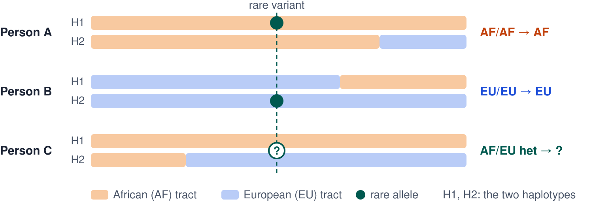
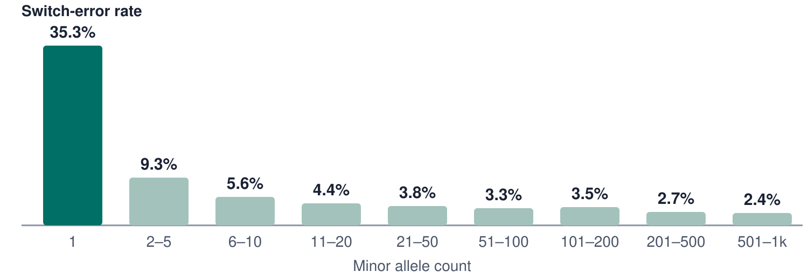
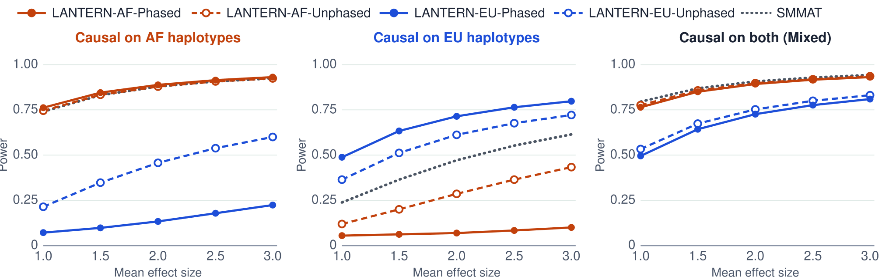

vignettes/lantern.Rmd
lantern.RmdPeople with recent ancestry from more than one population, such as African Americans, are called admixed. Along each of their chromosomes, some segments were inherited from African ancestors and others from European ancestors. Software such as RFMix can infer, for every segment and each of the two copies of a chromosome, which population it came from. This is called local ancestry.
Rare-variant association tests usually group the rare variants in a gene and test whether carrying them is associated with a trait. If a variant’s effect depends on the genetic background it sits on, for example because it is tagged by different nearby variants in African and European haplotypes, pooling all carriers mixes carriers with and without the effect, and the test loses power.
lantern uses local ancestry to split each person’s count of alternate alleles (their dosage, 0, 1 or 2) into one dosage per ancestry. A heterozygote whose allele sits on an African haplotype contributes 1 to the African dosage and 0 to the European dosage. lantern then runs the gene-based SMMAT test from the GMMAT package separately for each ancestry, and combines the per-ancestry p-values for each gene into one p-value with the Cauchy combination test.
For most carriers the split is clear. If both copies of the chromosome are African at the variant (person A below), the allele is African; if both are European (person B), it is European. The hard case is a heterozygote with one African and one European copy (person C): the allele is on one of the two, and only phase, the assignment of each allele to a chromosome copy, says which.

Phasing is least reliable for exactly the variants that rare-variant tests use. In the UK Biobank, SHAPEIT5 places a singleton allele on the wrong haplotype about one time in three:

lantern therefore offers two ways to split.
mode = "haplotype" uses the phased genotypes, like Tractor
does for common variants. mode = "dosage" does not use
phase: it shares each ambiguous heterozygote’s allele between the two
ancestries, with shares estimated from the variant’s other carriers
(vignette("split-intuition") explains how).
We simulated traits on chromosome 19 of 3,313 participants of the Jackson Heart Study, about 80% of whose ancestry is African, with causal effects carried by alleles on African haplotypes, on European haplotypes, or on both. The ancestry-split tests did not inflate the type I error, down to a significance level of . When the effect was carried on the European (here the minority-ancestry) haplotypes, testing the European dosage had about twice the power of SMMAT on unsplit genotypes, and the unphased split about 1.5 times. When the effect was on African haplotypes or on both, the African-ancestry test lost almost nothing against SMMAT.

mode = "haplotype" and mode = "dosage".The details are in the preprint: Wang Y, Tuftin B, Raffield LM, Hidalgo B, Kerns SL, DeWan AT, Leal SM, Auer PL (2026). LANTERN: Leveraging local ancestry tracts to enhance rare-variant aggregate association testing. medRxiv. doi: 10.64898/2026.04.24.26351693.
The analysis has three steps, one function each:
ancestry_split() reads a phased VCF and an RFMix
local-ancestry file and returns one dosage matrix per ancestry.write_ancestry_gds() saves each matrix as a SeqArray
GDS file, the format GMMAT reads.ancestry_smmat() runs SMMAT on each GDS file and
combines the results.
if (!requireNamespace("BiocManager", quietly = TRUE))
install.packages("BiocManager")
BiocManager::install("lantern")Step 3 also needs GMMAT (from CRAN) and SeqVarTools (from Bioconductor):
install.packages("GMMAT")
BiocManager::install("SeqVarTools")lantern includes a small simulated dataset: 60 admixed individuals,
200 rare variants on chromosome 19 and eight genes. We simulated a
continuous trait y that is raised by alternate alleles in
GENE2, but only when the allele sits on an African
haplotype. A good analysis should find GENE2 in the
African-ancestry test and not in the European one.
ext <- system.file("extdata", package = "lantern")
vcf <- file.path(ext, "toy.vcf.gz")
msp <- file.path(ext, "toy.msp.tsv")The VCF holds phased genotypes. A | separates the two
copies of the chromosome, so 0|1 means the alternate allele
is on the second copy:
vcf_lines <- readLines(vcf)
data_lines <- vcf_lines[!startsWith(vcf_lines, "##")]
substr(data_lines[1:3], 1, 60)
#> [1] "#CHROM\tPOS\tID\tREF\tALT\tQUAL\tFILTER\tINFO\tFORMAT\tS001\tS002\tS003"
#> [2] "chr19\t1168394\t.\tT\tA\t.\tPASS\t.\tGT\t0|0\t0|0\t0|0\t0|0\t0|0\t0|0\t0|0\t"
#> [3] "chr19\t1240171\t.\tT\tC\t.\tPASS\t.\tGT\t0|0\t0|0\t0|0\t0|1\t0|0\t0|0\t0|0\t"The MSP file is RFMix’s local-ancestry output. Its first line gives
the population codes (here 0 = AFR and 1 = EUR). Each later row is a
segment of the chromosome, with one ancestry call per sample and
chromosome copy (columns S001.0, S001.1,
…):
substr(readLines(msp, n = 4), 1, 70)
#> [1] "#Subpopulation order/codes: AFR=0\tEUR=1"
#> [2] "#chm\tspos\tepos\tsgpos\tegpos\tn snps\tS001.0\tS001.1\tS002.0\tS002.1\tS003.0\tS"
#> [3] "chr19\t1000000\t4999999\t1.00\t5.00\t25\t0\t0\t0\t0\t0\t0\t0\t0\t0\t1\t0\t1\t0\t0\t1\t0\t0\t0"
#> [4] "chr19\t5000000\t8999999\t5.00\t9.00\t25\t0\t0\t1\t0\t0\t0\t0\t1\t0\t0\t0\t0\t0\t1\t0\t0\t0\t0"ancestry_split() matches samples between the two files,
finds the ancestry segment that contains each variant, and splits the
dosages.
split <- ancestry_split(vcf, msp, mode = "dosage", chrom = "chr19",
verbose = FALSE)The result has one variants x samples dosage matrix per population, named after the populations in the MSP file:
split$AFR[1:4, 1:6]
#> [,1] [,2] [,3] [,4] [,5] [,6]
#> [1,] 0 0 0 0 0 0
#> [2,] 0 0 0 1 0 0
#> [3,] 0 0 0 0 0 0
#> [4,] 0 0 0 0 0 0
split$EUR[1:4, 1:6]
#> [,1] [,2] [,3] [,4] [,5] [,6]
#> [1,] 0 0 0 0 0 0
#> [2,] 0 0 0 0 0 0
#> [3,] 0 0 0 0 0 0
#> [4,] 0 0 0 0 0 0Most entries are 0 because the variants are rare.
mode = "dosage" ignores phase. For a heterozygote with one
African and one European haplotype, the genotype alone does not say
which haplotype carries the allele, so the allele is shared between the
two ancestries, with shares estimated from the other carriers of the
same variant. Here is the first such heterozygote in the data; its two
shares add up to its one allele:
i <- which(split$AFR %% 1 > 0, arr.ind = TRUE)[1, ]
c(AFR = split$AFR[i[1], i[2]], EUR = split$EUR[i[1], i[2]])
#> AFR EUR
#> 0.875 0.125vignette("split-intuition") explains how the shares are
calculated. With phased data you can instead use
mode = "haplotype", which assigns every allele to the
ancestry of its own haplotype and never produces fractions.
The result also lists the variants that were kept. Variants with no alternate allele in these samples are dropped (16 here):
head(split$variant_info)
#> chrom pos ref alt
#> 1 chr19 1168394 T A
#> 2 chr19 1240171 T C
#> 3 chr19 2252809 A G
#> 4 chr19 2330989 C T
#> 5 chr19 2436455 A G
#> 6 chr19 2459485 C G
split$overlap[c("n_common", "n_variants_kept", "n_monomorphic_filtered")]
#> $n_common
#> [1] 60
#>
#> $n_variants_kept
#> [1] 184
#>
#> $n_monomorphic_filtered
#> [1] 16GMMAT reads genotypes from GDS files, so each dosage matrix is saved to its own file. The function returns the file paths, named by population.
out_dir <- tempfile("lantern-")
gds <- write_ancestry_gds(split, out_dir, verbose = FALSE)
gds
#> $AFR
#> [1] "/tmp/Rtmp7NLrWP/lantern-429a61639d83/AFR.gds"
#>
#> $EUR
#> [1] "/tmp/Rtmp7NLrWP/lantern-429a61639d83/EUR.gds"SMMAT needs three more inputs: a phenotype table, a kinship matrix and a gene-group file. The phenotype table has one row per sample, with the trait and covariates:
pheno <- read.delim(file.path(ext, "toy_pheno.tsv"))
head(pheno, 3)
#> id y age sex
#> 1 S001 1.1948 62 1
#> 2 S002 2.2396 62 1
#> 3 S003 7.6596 64 0The kinship matrix describes how related the samples are. Our simulated samples are unrelated, so we use the identity matrix. In a real study this would be a genetic relatedness matrix:
The gene-group file assigns variants to genes. It has no header and
six columns: gene, chromosome, position, reference allele, alternate
allele and a weight. These are the 25 variants of
GENE2:
genes <- read.delim(file.path(ext, "toy_genes.tsv"), header = FALSE,
col.names = c("gene", "chr", "pos", "ref", "alt", "weight"))
head(genes[genes$gene == "GENE2", ])
#> gene chr pos ref alt weight
#> 26 GENE2 19 5249792 A T 1
#> 27 GENE2 19 5436416 G C 1
#> 28 GENE2 19 5496995 T A 1
#> 29 GENE2 19 5510001 G C 1
#> 30 GENE2 19 5601633 G T 1
#> 31 GENE2 19 5969726 G T 1
table(genes$gene)
#>
#> GENE1 GENE2 GENE3 GENE4 GENE5 GENE6 GENE7 GENE8
#> 25 25 25 25 25 25 25 25ancestry_smmat() fits the null model (the trait
explained by the covariates and relatedness, without genotypes) once,
then runs SMMAT for each ancestry. Passing ancestry_counts
and variant_info from Step 1 weights the Cauchy combination
by how many samples of each ancestry carry a gene’s variants, so the
ancestry with more data counts for more.
res <- ancestry_smmat(gds, pheno, y ~ age + sex, kinship,
gene_group_file = file.path(ext, "toy_genes.tsv"),
ancestry_counts = split$ancestry_counts,
variant_info = split$variant_info,
verbose = FALSE)
res$results
#> gene p_AFR p_EUR w_AFR w_EUR p_cauchy
#> 1 GENE1 8.269778e-01 0.2250896 42 1 8.212171e-01
#> 2 GENE2 8.625395e-09 0.7771531 39 2 9.067722e-09
#> 3 GENE3 5.162240e-01 0.2822809 41 3 4.974372e-01
#> 4 GENE4 3.977574e-01 0.6121023 40 1 4.026767e-01
#> 5 GENE5 3.039969e-01 0.2189521 40 2 2.989101e-01
#> 6 GENE6 6.483093e-01 0.5622577 33 2 6.438543e-01
#> 7 GENE7 1.595176e-01 0.4246312 41 1 1.623335e-01
#> 8 GENE8 5.571825e-01 0.3854922 33 3 5.427531e-01The table has one row per gene: p_AFR and
p_EUR are the SMMAT p-values from each ancestry,
w_AFR and w_EUR the weights, and
p_cauchy the combined p-value. GENE2 stands
out:
res$results[res$results$gene == "GENE2", ]
#> gene p_AFR p_EUR w_AFR w_EUR p_cauchy
#> 2 GENE2 8.625395e-09 0.7771531 39 2 9.067722e-09Its African-ancestry p-value is very small, its European-ancestry p-value is not, and the combined p-value keeps the signal. For comparison, we test the same genes without splitting by ancestry. Adding the two dosage matrices gives back each sample’s total dosage:
pooled_gds <- file.path(out_dir, "pooled.gds")
write_dosage_gds(split$AFR + split$EUR, split$variant_info,
split$sample_ids, pooled_gds)
pooled <- ancestry_smmat(c(POOLED = pooled_gds), pheno, y ~ age + sex,
kinship, file.path(ext, "toy_genes.tsv"),
verbose = FALSE)
pooled$results[pooled$results$gene == "GENE2", c("gene", "p_POOLED")]
#> gene p_POOLED
#> 2 GENE2 2.38154e-08The pooled test also detects GENE2, with a p-value about
three times larger: carriers whose allele sits on a European haplotype
add to the pooled dosage without adding to the effect.
vignette("split-intuition") works through the split on
small matrices, for two and for more populations.vignette("toy-vcf-msp-example") shows the VCF and MSP
formats in more detail, including a four-population example.vignette("real-data-chr19") analyses chromosome 19 in a
real cohort with binary, continuous and count traits.
sessionInfo()
#> R version 4.6.1 (2026-06-24)
#> Platform: x86_64-pc-linux-gnu
#> Running under: Ubuntu 24.04.5 LTS
#>
#> Matrix products: default
#> BLAS: /usr/lib/x86_64-linux-gnu/openblas-pthread/libblas.so.3
#> LAPACK: /usr/lib/x86_64-linux-gnu/openblas-pthread/libopenblasp-r0.3.26.so; LAPACK version 3.12.0
#>
#> locale:
#> [1] LC_CTYPE=C.UTF-8 LC_NUMERIC=C LC_TIME=C.UTF-8
#> [4] LC_COLLATE=C.UTF-8 LC_MONETARY=C.UTF-8 LC_MESSAGES=C.UTF-8
#> [7] LC_PAPER=C.UTF-8 LC_NAME=C LC_ADDRESS=C
#> [10] LC_TELEPHONE=C LC_MEASUREMENT=C.UTF-8 LC_IDENTIFICATION=C
#>
#> time zone: UTC
#> tzcode source: system (glibc)
#>
#> attached base packages:
#> [1] stats graphics grDevices utils datasets methods base
#>
#> other attached packages:
#> [1] lantern_0.99.1 BiocStyle_2.40.0
#>
#> loaded via a namespace (and not attached):
#> [1] tidyselect_1.2.1 dplyr_1.2.1 Biostrings_2.80.2
#> [4] gdsfmt_1.48.2 fastmap_1.2.0 CompQuadForm_1.4.4
#> [7] rpart_4.1.27 digest_0.6.39 lifecycle_1.0.5
#> [10] survival_3.8-6 magrittr_2.0.5 compiler_4.6.1
#> [13] rlang_1.3.0 sass_0.4.10 tools_4.6.1
#> [16] yaml_2.3.12 data.table_1.18.6.1 knitr_1.52
#> [19] SeqArray_1.52.1 purrr_1.2.2 GWASExactHW_1.2
#> [22] BiocGenerics_0.58.1 desc_1.4.3 nnet_7.3-20
#> [25] grid_4.6.1 stats4_4.6.1 jomo_2.7-6
#> [28] GMMAT_1.5.0 mice_3.19.0 iterators_1.0.14
#> [31] MASS_7.3-65 cli_3.6.6 rmarkdown_2.32
#> [34] crayon_1.5.3 ragg_1.5.2 reformulas_0.4.4
#> [37] generics_0.1.4 otel_0.2.0 minqa_1.2.8
#> [40] cachem_1.1.0 operator.tools_1.6.3.1 splines_4.6.1
#> [43] parallel_4.6.1 BiocManager_1.30.27 XVector_0.52.0
#> [46] vctrs_0.7.3 boot_1.3-32 glmnet_5.1
#> [49] Matrix_1.7-5 jsonlite_2.0.0 bookdown_0.48
#> [52] IRanges_2.46.0 S4Vectors_0.50.3 mitml_0.4-5
#> [55] systemfonts_1.3.2 foreach_1.5.2 tidyr_1.3.2
#> [58] jquerylib_0.1.4 glue_1.8.1 pkgdown_2.2.1
#> [61] nloptr_2.2.1 pan_2.0 codetools_0.2-20
#> [64] shape_1.4.6.1 GenomicRanges_1.64.0 lme4_2.1-0
#> [67] tibble_3.3.1 pillar_1.11.1 htmltools_0.5.9
#> [70] Seqinfo_1.2.0 R6_2.6.1 SeqVarTools_1.50.1
#> [73] textshaping_1.0.5 Rdpack_2.6.6 formula.tools_1.7.1
#> [76] evaluate_1.0.5 lattice_0.22-9 Biobase_2.72.0
#> [79] rbibutils_2.4.1 backports_1.5.1 broom_1.0.13
#> [82] bslib_0.12.0 Rcpp_1.1.2 nlme_3.1-169
#> [85] mgcv_1.9-4 logistf_1.26.1 xfun_0.62
#> [88] fs_2.1.0 pkgconfig_2.0.3